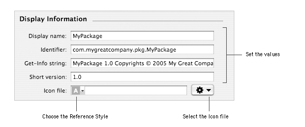

PATH Contents > Customizing component settings
Customizing component settings
When you create a new component, by creating a new project or adding a component to a metapackage, its information and options are
set by default. This documents shows what these settings are and how to change them.
Customizing the component description
The information in the Description section is used by Installer for its main window.
This section allows to customize the following pieces of information:
- Title: this piece of information is used by Installer for the window title, titles of some steps of the installation
and - if the component is a part of a metapackage - the name of the component in the Custom Install list.
By default, the title is set to the name of the project.
- Version: this piece of information is not used by Installer and is only there for
historical reasons. To manage components versions, use the Version section.
By default, the version is set to 1.0.
- Description: this piece of information is used by Installer in the Custom Install mode. It is displayed
in the description zone when you select a component in the list.
By default, the description is empty.
- Delete warning: this piece of information is not used by Installer and is only there for
historical reasons.
By default, the delete warning is empty.
All this information can be localized. By default, the description is the same for every language. To make Installer
display a localized description, you will need to add one.
To customize a component description:
| 1 | Select the component in the Packages & Metapackages list. |
| 2 | Choose View > Settings. |
| 3 | Type the new values in the text fields of the Description section. |
To add a localization:
| 1 | Select the component in the Packages & Metapackages list. |
| 2 | Choose View > Settings. |
| 3 | Choose Add Localization… from the localization pop-up menu. |
| 4 | Type the name of the localization and click Add. |
| 5 | Type the new values in the text fields of the Description section. |
To edit a localization:
| 1 | Select the component in the Packages & Metapackages list. |
| 2 | Choose View > Settings. |
| 3 | Choose the localization from the localization pop-up menu. |
| 5 | Change the information |
To remove a localization:
| 1 | Select the component in the Packages & Metapackages list. |
| 2 | Choose View > Settings. |
| 3 | Choose the localization to remove from the localization pop-up menu.
|
Note:
The International localization can't be removed. If you do not wish to use an international localization, just leave the text f
ields empty for this localization.
|
|
|
| 4 | Choose Remove… from the localization pop-up menu. |
| 5 | Click Remove. |
Customizing the component display information
Display information is used by the Finder for the Get Info window.

Here is the description of the attributes in the Display Information section:
- Display name: this information is not used by the Finder or Installer. Reasons for
its existence are unknown at the moment of this writing.
By default the display name is the project name.
- Identifier: this is the bundle identifier of the component. It is recommended to conform the Reverse DNS naming
convention for its value. The identifier can be used by Requirements to define a component.
By default, the identifier is built from the COMPANY_PACKAGE_IDENTIFIER value and the name of
the project.
- Get-Info string: this is the string displayed in the Finder Get Info window for the Version attribute of the component.
By default, the get-info string is built from the COMPANY_NAME value and the name of
the project.
- Short version: this string is displayed for the component in the Version column
of Finder's windows viewed as Lists.
By default, the short version is 1.0.
- Icon file: this is the path name (absolute or relative to the project) of the icon which will be
used for the component.
By default, this value is empty (the standard icon will be used).
Notes:
- By default, the icon file is referenced by an absolute path name. You can switch to a relative path name using the pop-up
menu of the text field.
- This document shows how to change the file reference with the standard open dialog. You can also directly type the path or drag and
drop an icon file in the text field (as long as it's not being edited).
- If the reference points to a file which does not exist (any more), the path name will be displayed red.
|
|
To customize the display Information of a component:
| 1 | Select the component in the Packages & Metapackages list. |
| 2 | Choose View > Settings. |
| 3 | Type the values. |
To use a customized icon:
| 1 | Select the component in the Packages & Metapackages list. |
| 2 | Choose View > Settings. |
| 3 | Choose Choose… from the Action pop-up menu of the
Display Information section. |
| 5 | Select the icon file to use for the component.
|
Note: The only supported format for icons is: icns.
|
|
|
| 6 | Click Choose. |
Customizing the component version
The information in the Version section are used by Installer to know the version of the component.
Installer can then determine if a package older than the installed one is going to be installed and prevents the installation
if the Allow Revert to Previous Version flag is not enabled. Additionally, if the same
version of a required component is being installed within a metapackage, it will become selectable.
This section allows to customize the following pieces of information:
- Major: this the major version number (the integer part of a version number).
By default, the major version is 1.
- Minor: this the minor version number (the decimal part of the version number).
By default, the minor version is 1.
To customize the component version:
| 1 | Select the component in the Packages & Metapackages list. |
| 2 | Choose View > Settings. |
| 3 | Type the values for the major and minor versions in their respective text fields. |
Tweaking component options
The Options section is only availble for packages. These options define the behavior of the package before, during and after the installation.
The Restart mode defines the behavior Installer shall follow if the installation is successful.
You can choose amongst five modes:
- No Restart Required: when the installation is successful, the user will be able to just quit Installer.
This is the default behavior.
- Recommended Restart: when the installation is successful, the user will be proposed to restart the computer. He/she can still just quit
Installer. This behavior is available on Mac OS X 10.2 and later.
- Required Restart: when the installation is successful, the user will have to restart the computer.
- Shutdown Required: when the installation is successful, the user will have to shutdown the computer.
This behavior is available on Mac OS X 10.2 and later.
- Logout Required: when the installation is successful, the user will have to logout.
This behavior is available on Mac OS X 10.3 and later.
Important: the behavior will only be applied if the component is installed on the root volume. With metapackages, the
more restrictive behavior of the children component will be applied.
The authorization mode specifies which category of users can install a package. Additionally, this dtermines the user id which will be used
to run installation scripts.
Three authorization mode are available:
- No Authorization Required: no authorization is required to install the package. This is the default mode. Installation scripts will
be run with the user id of the current user. If some files are to be installed in restricted locations, the installation will fail.
- Admin Authorization: Installer will ask the current user to authenticate as an administrator if he/she is not one him/herself.
Installation scripts will be run with the user id of the authenticated administrator. If some files are to be installed in locations requiring
root privileges, the installation may fail.
|
Note: It is recommended to use the Root Authorization mode instead of the Admin one. This will avoid
encountering bugs from previous versions of Installer.
|
|
- Root Authorization: Installer will ask the current user to authenticate as an administrator if it's not root.
Installation scripts will be run with the root user id.
|
| Authorization |
Current User |
Authentication required |
Installation Privileges |
|
| No Authorization Required |
Standard |
No |
Current User |
| Administrator |
No |
Administrator |
| root |
No |
root |
 |
| Admin Authorization |
Standard |
Yes |
Administrator |
| Administrator |
No |
Administrator |
| root |
No |
root |
|
| Root Authorization |
Standard |
Yes |
root |
| Administrator |
Yes |
root |
| root |
No |
root |
|
The flags options defines the Installer behavior regarding the component and the installation of its files.
All flags are disabled by default.
Eight flags can be changed:
- Required: when this flag is enabled, the package will be a mandatory part of the installation, unless the same version of
the package has already been installed previously.
- Root Volume Only: when this flag is enabled, the package or any metapackage containing it can only be installed on the
root volume.
- Overwrite Directory Permissions: when this flag is enabled, if a directory in the files archive exists already on disk,
its permissions will be set to the ones of the directory in the archive..
- Update Installed Languages Only: when this flag is disabled and an earlier of the package has been installed, Installer
will only update the already installed localizations of applications. Other localizations won't be installed to avoid possible resulting
partial localizations.
- Relocatable: when this flag is enabled, Installer lets the user change the default location of the installation.
|
Important: Contrary to what is written in the Apple documentation, from Mac OS X 10.2.8 to 10.3.3,
as soon as a component of a metapackage is relocatable, the whole metapackage is relocatable.
|
|
- Allow Revert to Previous Version: when this flag is enabled, Installer allows to install a
component even if a later version has been installed earlier.
- Follow Symbolic Links: when this flag is enabled and Installer finds a symbolic link when installing files,
the link will be resolved instead of being replaced by a real file or folder.
Note: If you're installing files in /etc for instance, don't forget to enable this flag because
/etc is actually a symbolic ling to /private/etc.
|
|
To change the restart mode:
| 1 | Select the package in the Packages & Metapackages list. |
| 2 | Choose View > Settings. |
| 3 | Choose the mode from the Restart pop-up menu. |
To change the authorization requirement:
| 1 | Select the package in the Packages & Metapackages list. |
| 2 | Choose View > Settings. |
| 3 | Choose the required authorization from the Authorization
pop-up menu. |
To enable or disable a flag:
| 1 | Select the package in the Packages & Metapackages list. |
| 2 | Choose View > Settings. |
| 3 | Select or unselect the flag checkbox. |
Author: Stéphane Sudre